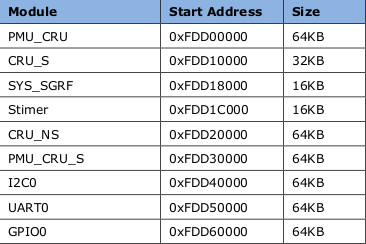
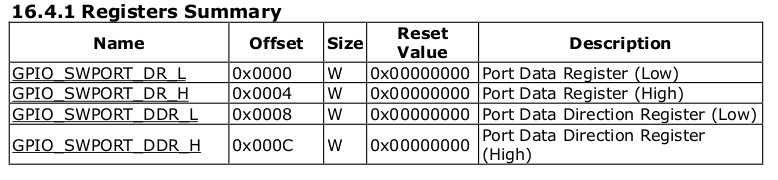
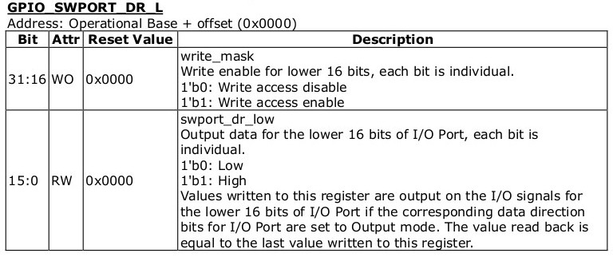
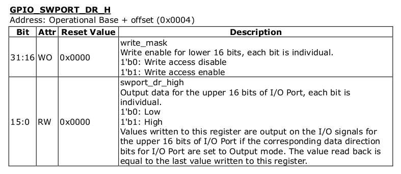
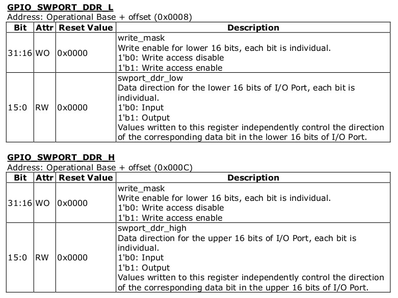
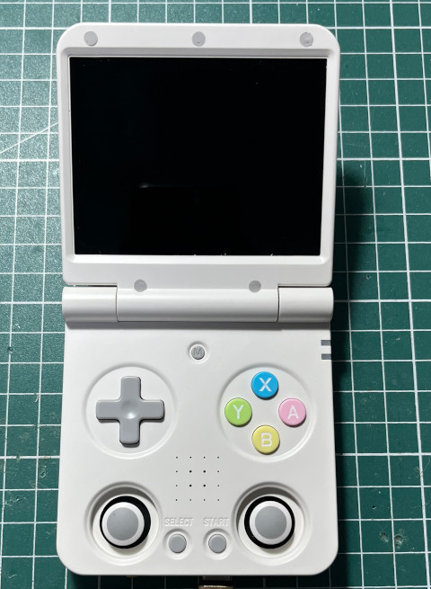
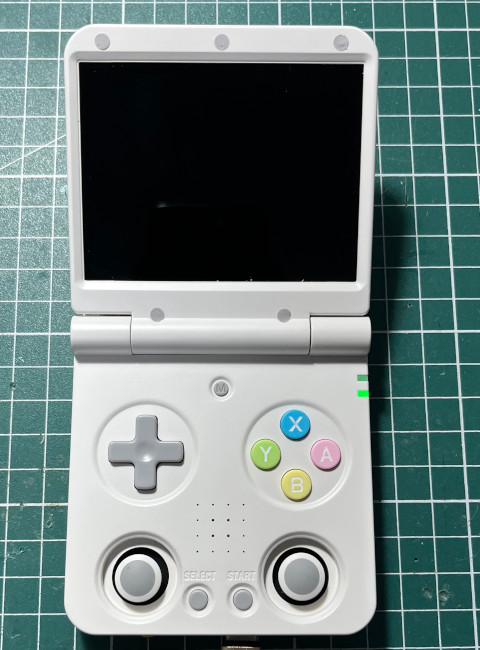

綠色LED是連接到GPIO0-12腳位，GPIO0的映射位址如下：





.equ GPIO0_BASE, 0xFDD60000
.equ GPIO1_BASE, 0xFE740000
.equ GPIO2_BASE, 0xFE750000
.equ GPIO3_BASE, 0xFE760000
.equ GPIO4_BASE, 0xFE770000
.global _start
_start:
b reset
reset:
ldr x0, =GPIO0_BASE
ldr w1, =0xffffffff
str w1, [x0, #8]
str w1, [x0, #12]
ldr w1, =(1 << 12)
ldr w2, =0xffff0000
0:
eor w2, w2, w1
orr w2, w2, #2
str w2, [x0, #0]
ldr x5, =0x3ffffff
1:
subs x5, x5, #1
bne 1b
b 0b
.end
main.ld
MEMORY {
RAM : ORIGIN = 0, LENGTH = 64K
}
SECTIONS {
.text : { *(.text*) } > RAM
.data : { *(.data*) } > RAM
.bss : { *(.bss*) } > RAM
}
Makefile
all: aarch64-linux-gnu-as -mcpu=cortex-a53 -o main.o main.s aarch64-linux-gnu-ld -T main.ld -o main.elf main.o aarch64-linux-gnu-objcopy -O binary main.elf main.bin run: xrock extra maskrom --rc4 off --sram main.bin clean: rm -rf main.bin main.o main.elf
接著讓Miyoo Flip進入MASKROM模式後，執行如下命令：
$ make
arch64-linux-gnu-as -mcpu=cortex-a53 -o main.o main.s
aarch64-linux-gnu-ld -T main.ld -o main.elf main.o
aarch64-linux-gnu-objcopy -O binary main.elf main.bin
$ make run
xrock extra maskrom --rc4 off --sram main.bin
完成

